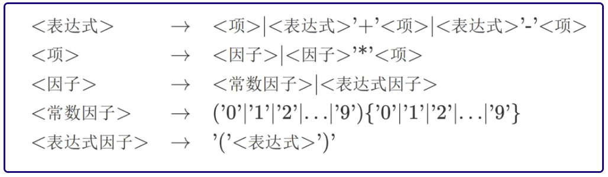

递归下降
概念
文法
词法 Lex
语言中词汇及其属性和含义的规则.
表示方法:
- 尖括号
< >内所包含的内容，明确标识了一个语法成分的边界. - 右箭头
→则直观展示了构成关系，即左侧部分由右侧部分的具体规则组合而成. - 竖线
|作为选择符，表明在特定情况下，规则可以从其两侧提供的任一选项中选取，体现了规则的灵活性与多样性.
语法Syntax
描述语言中句子结构和组织方式的规则.
分析
词法分析LEXER
程序通过依次读取字符串中的每一个字母，并依据当前字母与已知词类开头字母的对应关系，来逐步构建并识别出完整的词汇及其所属词类.
划分ismileyoulaughsmile1
2
3
4
5
6
7
8
9
10
11
12
13
14for (int i = 0; i < str.size(); i++) {
if (str.charAt(i) == 'i') {
System.out.println("i - 主语");
} else if (str.charAt(i) == 'y') {
i = i + 2;
System.out.println("you - 主语");
} else if (str.charAt(i) == 's') {
i = i + 4;
System.out.println("smile - 谓语");
} else {
i = i + 4;
System.out.println("laugh - 谓语");
}
}
Token
token作为文本的最小语法单位，常被用于表示和处理文本数据.在此场景下，token可作为存储字符串经词法分析后所得单元的适宜载体.
- 建议采用列表（list）作为token的存储结构.
- 每当一个token被识别，即将其添加至列表中.
- 通过一次完整的扫描，原字符串的信息即可被有效地整合并转化为一个token列表，为后续操作提供便利.
语法分析 PARSER
语法分析的任务聚焦于“token”列表之上.
此规则刻画了一个表达式的构成框架.具体而言，从这一结构中可以清晰地洞察到：
而项本身，则是因子的集合，它们通过乘法相连：
其中，因子是最基础的组成单元，这里用字母i来代表，它代表了一个不可再分割的实体.
构成表达式的三层架构
具体的代码实现:需要定义几个类，以构建出构成语法树的基本节点.表达式（Expr）、项（Term）以及因子(Factor):1
2
3
4
5
6
7
8
9
10
11
12
13// 表达式节点类，包含多个项
public class Expr {
private ArrayList<Term> terms;
}
// 项节点类，包含多个因子
public class Term {
private ArrayList<Factor> factors;
}
// 因子节点类，作为语法树中最基础的单元
public class Factor {
}
自顶向下建树AST
- 对
<表达式>按照规则进行拆分 - 识别出构成表达式的一个一个
<项> - 对
<项>按照规则进行拆分 - 识别出构成项的一个一个
<因子> - 构建成一棵自顶向下的逻辑树
下降
将关注点从表达式层级下移至项层级.
exmple:
从全局到局部
一个节点有关的语法结构，是不随其所在的位置变化的.
某个Term无论是Expr的第几个Term，它的构成规则也不会改变，都是由若干个因子和若干个”*”按次序排布构成.
这个局部的性质，不随其在全局的位置和周围的状态改变.
所以，不妨把全局的视角，”短视地”移动到局部.
一个表达式，就是几个项而已.
如果能够在这里屏蔽项的解析过程，而直接返回项的解析结果，那么就可以将表达式的解析过程化简为一次简单的下降.
伪代码实现
根据上面设定的情形(只有i,*,+)我们给出下面的伪代码思路:
1 | parseExpr: |
1 | parseTerm: |
1 | parseFactor: |
递归
为了更深入地说明递归下降法的意义，对上述因子的语法规则进行修改：
这么做的话，语法树就不是简单的三层了，甚至说同学们无法得知其层数，因为任何一个因子都可以通过解析为表达式的方式来不断的向下扩张，这无疑造成了巨大的复杂性.
解析流程，可能会呈现为：
此时再从全局的视角来看，这个语法树的宽度和深度不再可知.
但是从局部的视角来说，会发现表达式的语法规则没有变，项的语法规则也没有变，唯一变的是因子.
因此只需要修改上面的parseFactor过程就好.1
2
3
4
5
6
7
8
9
10
11
12parseFactor:
检查当前的token是否是i
if 真:
跳过当前的token(i)
利用i生成一个新的Factor f
返回f
if 假，说明是(表达式):
跳过当前token(()
调用parseExpr获得一个表达式e
利用e生成因子f
跳过当前token(()
返回f
题目实例
为了方便举例，我们仍然使用表达式解析作为背景，不过对其中的一些规则进行修改。给一个表达式，解析它的结构，并用输出来检验解析的正确性。表达式规则如下:

步骤1 建类
观察上面在→左面的部分，他们都是我们需要进行分析的语法成分，因此我们需要对他们进行建类，并且构造解析方法.
Ⅰ 表达式类 → Expr
Ⅱ 项类 → Term
Ⅲ 因子类 → Factor ← Number & Expr
这里考虑到有两种因子，我们应当分开来处理.
表达式因子实质就是表达式加括号
括号本质上是为了区分优先级，但优先级可以由我们的语法树结构来体现，因此为了减少类，可以将这二者统一，都使用表达式Expr来存储信息.
常数因子则可以单独用Number来存。
Expr和Number都属于因子,因此我们可以利用面向对象的知识，创造一个Factor接口(Interface)，然后让Expr和Number实现这个接口.
步骤2 词法分析Lexer
分别对这几个类型的词法单元建立token的标识符：1
2
3
4
5
6
7
8public class Token {
public enum Type {
ADD, SUB, MUL, LPAREN, RPAREN, NUM
}
private final Type type;
private final String content;
//....
}
同时，在词法分析部分，lexer需要识别不同的token，注意到，这几个类型的词法单元的开头字符必然不同，因此我们利用这一点来实现词法分析.1
2
3
4
5
6
7
8
9
10
11
12
13
14
15
16
17
18
19
20
21
22
23
24
25
26
27
28
29
30
31
32
33public Lexer(String input) {
int pos = 0;
while (pos < input.length()) {
if (input.charAt(pos) == '(') {
tokens.add(new Token(Token.Type.LPAREN, "("));
pos++;
} else if (input.charAt(pos) == ')') {
tokens.add(new Token(Token.Type.RPAREN, ")"));
pos++;
} else if (input.charAt(pos) == '+') {
tokens.add(new Token(Token.Type.ADD, "+"));
pos++;
} else if (input.charAt(pos) == '-') {
tokens.add(new Token(Token.Type.SUB, "-"));
pos++;
} else if (input.charAt(pos) == '*') {
tokens.add(new Token(Token.Type.MUL, "*"));
pos++;
} else {
char now = input.charAt(pos);
StringBuilder sb = new StringBuilder();
while (now >= '0' && now <= '9') {
sb.append(now);
pos++;
if (pos >= input.length()) {
break;
}
now = input.charAt(pos);
}
tokens.add(new Token(Token.Type.NUM, sb.toString()));
}
}
}
步骤3 语法分析Parser
首先我们需要先看看题目中的文法，它并不能直接的使用递归下降法:
试想一下，怎么判断箭头右边走哪一个路线呢？甚至说，就算去掉一个路线:
那我们难道是要在表达式的解析开始就再次调用表达式的解析吗?具体的情况就是:1
2
3
4parserExpr() {
parserExpr();
//.....
}
这样的代码会陷入无限的递归中，不是我们想要的结果.
事实上，在编译原理中，有类似规则的文法叫做左递归文法，它是不能用递归下降法解决的.
幸运的是，我们可以通过改写文法来消除左递归：
花括号
{}代表可以有0个或多个该部分，这样的改写与我们对原本规则的理解一致，因此是等价的.
类似的，我们对其他的规则也进行改写.
parser部分的关键则是如何用获得的token判断应当如何调用解析的方法:1
2
3
4
5
6
7
8
9
10
11
12
13
14
15
16
17
18
19
20
21
22
23
24
25
26
27
28
29
30
31
32
33
34
35
36
37
38
39
40public Expr parserExpr() {
ArrayList<Term> terms = new ArrayList<>();
ArrayList<Token> ops = new ArrayList<>();
terms.add(parserTerm());
while (lexer.notEnd()&&(lexer.now().getType() ==
Token.Type.ADD
|| lexer.now().getType() == Token.Type.SUB)) {
ops.add(lexer.now());
lexer.move();
terms.add(parserTerm());
}
return new Expr(terms, ops);
}
public Term parserTerm() {
ArrayList<Factor> factors = new ArrayList<>();
factors.add(parserFactor());
while (lexer.notEnd()&&lexer.now().getType() ==
Token.Type.MUL) {
lexer.move();
factors.add(parserFactor());
}
return new Term(factors);
}
public Factor parserFactor() {
if (lexer.now().getType() == Token.Type.NUM) {
Num num = new Num(lexer.now().getContent());
lexer.move();
return num;
} else {
// 这里调用move之前lexer.now()是(
lexer.move();
Expr expr = parserExpr();
// 这里调用move之前lexer.now()是)
lexer.move();
// 调用上面的move之后刚好保证表达式因子的全部成分被跳过。
return expr;
}
}
其中，lexer.now()获取当前分析的token，lexer.move()则可以移动到下一个token.
第七次作业
lr:导入复杂的冒险者关系
形式化表述:
- 冒险者 → 标识符 [被雇佣者]
- 被雇佣者 →
'('冒险者序列')' - 冒险者序列 → 冒险者 {
','冒险者} - 标识符 → 数字 | 字母 |
'_'[标识符] - 数字 → ‘0’ | ‘1’ … ‘9’
- 字母 → ‘a’ | ‘b’ … | ‘z’ | ‘A’ | ‘B’ …| ‘Z’ 其中
{}表示允许存在 0 个、1 个或多个[]表示允许存在 0 个或 1 个
建类
exp冒险者: 标识符[被雇佣者]term被雇佣者: (冒险者序列)factor标识符- 数字
- 字母
- 下划线
Lexer1
2
3
4
5
6
7
8
9
10
11
12
13
14
15
16
17
18
19
20
21
22
23
24
25
26
27
28
29
30
31
32
33
34
35
36
37
38
39
40
41
42
43
44
45
46
47
48
49public class Lexer {
private final String input;
private int pos = 0;
private String curToken;
private String removeWhitespace(String s) {
return s.replaceAll("\\s+", "");
}
public Lexer(String input) {
this.input = removeWhitespace(input);
next();
}
private boolean isIDChar(char c) {
return Character.isLetter(c) || Character.isDigit(c) || c == '_';
}
private String getID() {
StringBuilder sb = new StringBuilder();
while (pos < input.length() && /*TODO:1*/) {
sb.append(input.charAt(pos));
++pos;
}
return sb.toString();
}
public void next() {
if (pos == input.length()) {
curToken = null;
return;
}
char c = input.charAt(pos);
if (isIDChar(c)) {
curToken = getID();
}
else if (/*TODO:2*/) {
pos += 1;
curToken = String.valueOf(c);
}
else {
throw new RuntimeException("Unexpected character: " + c);
}
}
public String peek() {
return curToken;
}
}parse
1
2
3
4
5
6
7
8parseExpr:
调用parseFactor 获得一个标识符
识别到`,`或者`)`
return
识别到一个`(`
右移一个token
调用parseTerm 获得一个冒险者序列
return1
2
3
4
5
6
7
8
9
10parseTerm:
新建一个ExprList
parseExpr
加入List
while(token==',')
跳过当前token
parseExpr
加入到List中
生成新的term
return1
2
3
4
5parseFactor
得到ID
右移一个token！！！
生成新的factor
返回
解析完成后实现操作:
新建一个ExprList
对于每个Expr:
有一个factor,一个term
对于每个term:
有一个ExprList
对于每个factor:
一个String
aa(Expr_factor,Expr_term_item_factor)